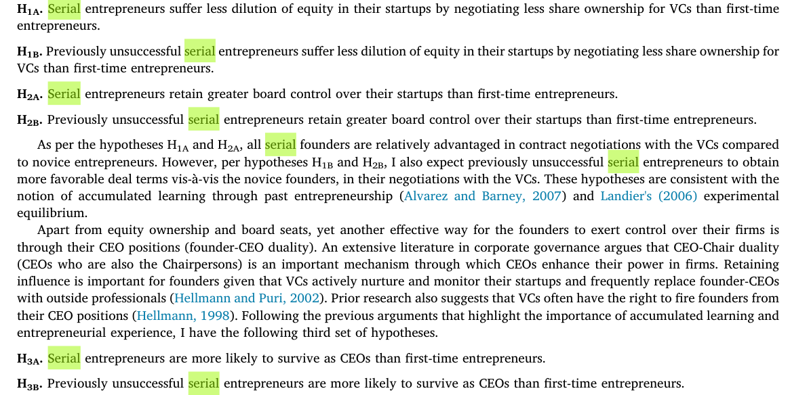

A comparison of the effect of angels and venture capitalists on innovation and value creation
Summary of the Paper:
- The paper titled “A comparison of the effect of angels and venture capitalists on innovation and value creation” by Supradeep Dutta and Timothy B. Folta, published in the Journal of Business Venturing in 2016, investigates how different types of private equity investors, namely angel groups and venture capitalists (VCs), influence innovation and value creation in technology ventures. Authors:
- Supradeep Dutta, University at Buffalo
- Timothy B. Folta, University of Connecticut Main Hypothesis:
- The authors hypothesize that: Angels and VCs contribute differently to innovation and commercialization outcomes. They suggest that while both might contribute to the rate of innovation, VCs might lead to more impactful innovations and faster commercialization due to their structured approach, governance mechanisms, and the urgency to exit investments within a certain timeframe.
- Testing the Hypotheses:
- Data Collection: The researchers assembled a longitudinal dataset of 350 technology ventures from five technology-intensive industries, tracking investments from both angel groups and early stage VCs.
- Methodologies Employed:
- OLS Estimation: Used to establish baseline effects, controlling for firm and year fixed effects.
- Difference-in-Differences (DiD) Estimation: This method helped in understanding the causal effect of VC investment over time by comparing outcomes before and after investment, using angel group-backed ventures as controls.
- Switching Regression: Applied to control for selection bias, distinguishing between the selection effect (choosing which firms to invest in) and treatment effect (actual influence post-investment).
- Key Findings:
- Innovation Rate: Both VCs and angels contribute equally to the rate of innovation, suggesting a substitutive role between the two in terms of patent counts.
- Innovation Impact: VC-backed ventures produce innovations with higher impact, evidenced by more citations of their patents, indicating VCs’ superior influence on the quality of innovation.
- Commercialization Speed: VC-backed firms tend to achieve successful exits (IPO or acquisition) faster than those backed by angel groups, attributed to VCs’ structured incentives for timely exits.
- Validity of Hypotheses:
- Innovation Hypothesis:
- Partially Supported: While both investors seem to drive innovation rates similarly, the impact of innovation (measured by patent citations) is significantly higher for VC-backed ventures, supporting the hypothesis that VCs contribute to more impactful innovations.
- Commercialization Hypothesis:
- Supported: The data clearly showed that VC-backed ventures commercialize faster, aligning with the hypothesis that VCs’ business models encourage quicker innovation cycles to exit. The study effectively used multiple methodologies to address potential biases like selection effects, providing robust insights into how different financial intermediaries affect venture outcomes. However, the authors acknowledge limitations such as not completely ruling out all selection effects and the focus on patent-based innovation metrics which might not capture all forms of innovation.
- Innovation Hypothesis:
What is Selection and Treatment effect?
- Selection Effect: This refers to the process or criteria by which investors (either venture capitalists or angel groups) choose which ventures to invest in. It involves the inherent bias where investors might select ventures based on certain observable or unobservable characteristics that could predispose those ventures to better performance or innovation, regardless of investor influence. For instance, if venture capitalists are better at picking ventures with higher inherent innovation potential due to more rigorous due diligence or industry networks, this would be a selection effect. The selection effect can lead to biased results if not accounted for, as it might appear that the investors are causing the improved innovation or performance when, in fact, they are just selecting ventures likely to succeed.
- Treatment Effect: This is the actual impact or influence that the investment from venture capitalists or angel groups has on the ventures after the investment decision has been made. It looks at how these investors might actively contribute to the development, innovation, or commercialization of the venture through their involvement, resources, networks, governance, or strategic guidance. The treatment effect isolates the value-added services provided by these investors beyond the initial selection. For example, venture capitalists might accelerate the commercialization process or enhance the quality of innovation through their networks or governance practices, which would be considered a treatment effect.
- Selection Effect: Refers to the bias introduced by investors selecting ventures likely to succeed based on inherent qualities before investment.
- Treatment Effect: The actual impact of the investor’s involvement on the venture’s innovation or performance after the investment is made. In their analysis, Dutta and Folta aim to separate these effects to understand which outcomes (innovation rate, quality of innovation, speed of commercialization) are due to the choice of investment (selection effect) versus the influence post-investment (treatment effect). They employ methodologies like difference-in-differences and switching regression to account for selection bias and focus on isolating the treatment effects.
AI: governance direct investor selection
- Switching regression
- changes the treatment effect
- if for example you were VC backed then it changes the treatment to not VC backed
- This is all that we should know
- changes the treatment effect
- hazard analysis is also called - survival analysis
Here’s a comparison between Angel Investors (AIs) and Venture Capitalists (VCs) based on the paper by Dutta and Folta:
-
Angel Investors (AIs):
- Investment Stage: Typically invest in earlier stages, often in seed or startup phases, but angel groups might invest later.
- Investment Size: Usually invest smaller amounts compared to VCs.
- Governance Role:
- Often adopt a more informal or relational governance approach.
- Less stringent control rights, more entrepreneur-friendly contracts.
- Might not have the same level of board involvement or contractual control as VCs.
- Investment Horizon:
- Tend to have a longer-term investment horizon since they invest their own money.
- Less urgency to exit, allowing for more experimental or slower innovation processes.
- Value-Added Services:
- Provide industry networks, mentorship, and sometimes strategic guidance.
- Their involvement can signal quality to other potential investors or partners.
- Impact on Innovation:
- Contribute equally to the rate of innovation as VCs.
- Might not push for rapid commercialization due to less pressure for short-term exits.
-
Venture Capitalists (VCs):
- Investment Stage: Focus on early-stage but often enter at a slightly later stage than individual angels or after angel investments.
- Investment Size: Typically provide larger investments, facilitating significant growth stages.
- Governance Role:
- Structured governance with board representation, rigorous monitoring, and control mechanisms.
- Use of covenants and other control rights to influence venture direction.
- Investment Horizon:
- Have a structured timeline due to fund lifecycle, often leading to pressure for quicker exits.
- Investment is time-bound, usually aiming for exits within a decade.
- Value-Added Services:
- Offer extensive networks, strategic partnerships, professional management support.
- Act as significant endorsers, enhancing market visibility and attracting additional resources.
- Impact on Innovation:
- Similar to AIs in terms of innovation rate but lead to innovations with greater impact (higher citation rates for patents).
- Drive faster commercialization, likely due to the structured pressure to achieve exits.
-
Key Points from the Study:
- Innovation Rate: Both AIs and VCs contribute similarly to the rate at which patents are filed.
- Innovation Impact: VC-backed ventures see their innovations cited more often, suggesting VCs might help in creating more impactful or broadly recognized innovations.
- Commercialization: VCs are associated with quicker commercialization, possibly due to their need for a timely exit.
-
What is is AI/VCs role in signlaing and building networks for startups?
- AI
- VC
-
What role do VC/AI play in the governance and mentorship of startups?
What are the three roles of VC’s according to Dutta & Folta?
- Role as a Quality Signal and Information Intermediary
- Role in Governance:
- Role as Financial Intermediary:
What are “serial entrepreneurs”, how are they different from “portfolio entrepreneurs”?
- Portfolio entrepreneurs own and manage a portfolio of businesses concurrently
- Serial founders begin and manage their ventures sequentially
In Europe, failing as an entrepreneur has quite a stigma. In the US, on the contrary, this can be seen as being part of a learning curve. How do VC’s deal with unsuccessful entrepreneurs according to these readings?
- Negotiation of Favorable Terms:
- Even previously unsuccessful serial entrepreneurs are able to negotiate better contract terms with VCs compared to novice entrepreneurs. This includes less equity dilution and greater board control. This suggests that VCs recognize the value of experience gained through past failures, which can inform and potentially enhance future entrepreneurial endeavors.
- Valuation:
- While unsuccessful serial entrepreneurs do not receive higher valuations for their startups compared to novice founders, they still manage to secure better overall contract terms. This indicates that VCs are willing to provide high-powered incentives through control and cash flow rights, possibly as a recognition of the entrepreneurial effort and learning from previous ventures, even if those ventures were not successful.
- Timing of VC Investment:
- Startups founded by serial entrepreneurs, including those previously unsuccessful, tend to receive VC funding earlier than those founded by first-time entrepreneurs. This could be because VCs value the experience and insights gained from previous entrepreneurial attempts, even if unsuccessful, over the potential higher risk associated with failure.
- Learning from Failure:
- The study highlights that entrepreneurship, even in failure, imparts valuable learning that is useful for subsequent ventures. This learning aspect is recognized by VCs, who seem to weigh the potential for improved decision-making in future ventures due to this experience.
- Investment Decisions:
- VCs do not appear to solely base their investment decisions on past success or failure. Instead, they consider the entrepreneur’s ability to learn from past experiences. This is reflected in the fact that unsuccessful serial entrepreneurs are funded similarly to novice founders in terms of timing but with more favorable contract terms, suggesting a nuanced approach to risk assessment that includes entrepreneurial learning.
Success is good but failure is not so bad either: Serial entrepreneurs and venture capital contracting

Summary of the Paper: The paper titled “Success is good but failure is not so bad either: Serial entrepreneurs and venture capital contracting,” authored by Rajarishi Nahata, explores the impact of prior entrepreneurial experience on the financial contracting terms between startups and venture capitalists (VCs). The study focuses on how serial entrepreneurship influences deal terms when startups seek venture capital. Author:
- Rajarishi Nahata from Baruch College, CUNY. Main Hypotheses:
- Equity Dilution:
- H1A and H1B: Serial entrepreneurs (both previously successful and unsuccessful) are expected to suffer less dilution of equity, meaning they negotiate better terms where VCs receive less share ownership.
- Board Control:
- H2A and H2B: Serial entrepreneurs will retain greater board control over their startups compared to first-time entrepreneurs.
- Founder-CEO Duality:
- H3A and H3B: Serial founders are more likely to retain their CEO positions at the time of IPO.
- Startup Valuation:
- H4A and H4B: Serial entrepreneurs can negotiate higher valuations for their startups at VC funding, although this is primarily driven by previously successful founders.
- Testing Methodology:
- Data Collection: The study uses a sample of VC-backed IPOs from the U.S. between 1996 and 2011, where contractual details are more accessible due to public disclosure requirements. Information on shareholdings, board representation, and founder status was hand-collected from IPO prospectuses.
- Empirical Analysis:
- OLS and Logit Models: To test hypotheses, multivariate regression analyses (OLS for continuous outcomes like VC ownership and valuation, and logit for binary outcomes like founder-CEO duality) were employed. Key variables included indicators for serial entrepreneurship, VC investment details, startup characteristics, and performance metrics.
- Performance Metrics: The study also considered startup performance metrics like profit margin, ROA, and asset turnover ratio to check if company performance rather than founder experience drove contract terms. Findings:
- Validity of Hypotheses:
- Equity Dilution and Board Control: The hypotheses were supported. Serial entrepreneurs indeed negotiated better terms, retaining more equity and board control.
- Founder-CEO Duality: Supported, with serial founders more likely to remain CEOs.
- Valuation: Partially supported; previously successful serial entrepreneurs obtained higher valuations, but not the previously unsuccessful ones when compared to novice founders.
- Additional Insights:
- Serial entrepreneur-backed startups were funded earlier by VCs despite not necessarily performing better than novice-founded startups. This suggests that prior entrepreneurial experience provides significant bargaining leverage in negotiations with VCs.
- The study also found that the terms negotiated by serial entrepreneurs, even those previously unsuccessful, were generally more favorable than those by novice founders, highlighting the importance of learning from past entrepreneurial endeavors. Overall, the study validates that prior entrepreneurial experience significantly influences venture capital contracting terms, providing a nuanced view that even failure in past ventures does not entirely negate the benefits of experience in negotiating future deals.
ABC
- Summary of the Paper
- Title: Blood in the Water: An Abductive Approach to Startup Valuation on ABC’s Shark Tank
- Authors: Maude Lavanchy, Patrick Reichert, Amit Joshi (IMD Business School, Switzerland)
- Main Focus: The paper explores how startup valuation is negotiated between entrepreneurs and investors, using the unique setting of ABC’s Shark Tank, a television show where entrepreneurs pitch their ventures to a panel of investors.
- Main Hypotheses and Findings:
- Hypothesis: Entrepreneurs who offer less initial equity are more likely to receive investment offers.
- Testing: The authors constructed a dataset from all episodes aired from 2009 to 2015, analyzing variables like initial equity share, venture characteristics, and negotiation outcomes. They used statistical methods like classification trees and probit models.
- Result: Confirmed. Lower initial equity offerings were associated with a higher likelihood of receiving an offer, suggesting that equity retention acts as a signal of quality.
- Negotiation Dynamics:
- Hypothesis: Negotiations primarily involve adjustments in equity share rather than investment amount.
- Testing: Examined changes in deal terms from initial offers to final negotiations.
- Result: Supported. Negotiations tended to focus on altering the equity percentage rather than the investment amount, with investors often experiencing negotiation gains by obtaining more equity for the same investment.
- Competitive Dynamics:
- Hypothesis: Competition among investors leads to better deal terms for entrepreneurs.
- Testing: Analyzed scenarios where offers were made singly, jointly, or in competition.
- Result: Supported. When investors competed for a deal, entrepreneurs received terms closer to their initial ask, improving the quality of offers.
- Hypothesis: Entrepreneurs who offer less initial equity are more likely to receive investment offers.
- Methodology:
- Data Collection: Hand-collected data from Shark Tank episodes, focusing on pitch content, deal negotiations, and outcomes.
- Statistical Analysis: Utilized classification trees for initial variable selection, probit models for predicting offer likelihood, and a Heckman two-step procedure to correct for sample selection bias in negotiation analysis.
- Validity: - The hypotheses were generally validated within the context of Shark Tank, providing insights into the dynamics of startup valuation. However, the authors caution against broad extrapolation due to the unique selection criteria and entertainment focus of the show.
- Limitations: - The study’s setting is highly specific due to the nature of Shark Tank, where entertainment value influences pitch selection, potentially skewing the data. - The exploratory nature of the research means that while associations were established, causal relationships require further experimental validation.
- Conclusion: The paper contributes to understanding the often opaque processes of startup valuation in venture capital scenarios by providing empirical evidence from a public pitch competition. It highlights the strategic importance of initial equity retention as a signal and the impact of investor competition on negotiation outcomes. However, the findings are contextual, suggesting that similar dynamics might need validation in more traditional venture capital settings.